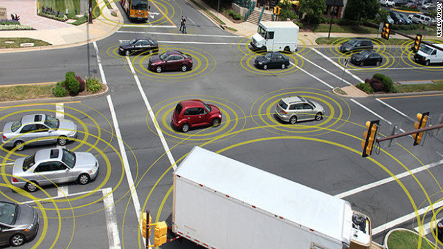

Whether you’ll agree with this list of the top five benefits of self-driving cars depends largely upon where you are in terms of your appreciation or disdain for automobiles. If you’re in the camp of automotive enthusiasts who love to drive, and consider driving both a sport and an art form odds are you’re not looking forward to the day when self-driving cars take over the roads. If you’re among the people who consider cars nothing more than tools for getting from Point A to Point B, you’re probably looking forward to the day when cars become smart enough to go where you tell them to with minimal physical involvement on your part. Regardless, here's why we need to let go of the wheel.
Here are the top five biggest benefits of driverless cars:
- Fewer Accidents
- Decreased (or Eliminated) Traffic Congestion
- Enhanced Human Productivity
- Improved Mobility for Children, Elderly, and the Disabled
- Save Money
1.) The leading cause of most auto accidents are caused by driver error. Whether it's alcohol, drugs, speeding, inattentiveness, we are all susceptible to accidents on the road. According to one study, if 90% of all cars were self-driving, as many as 21,700 lives would be perserved, and the economic costs of automobile accidents would be reduced by more that $400 billion.
2.) One of the biggist benefits for self-driving vehicles is that Self-driving vehicles would be well connected with their surrondings, even connected with other self-driving vehicles. Your self-driving vehicle would be able to meticulously coordinate with other vehicles to get you to your destination in the fastest time possible, freeing you of the hassle of navigating your surroundings on your own. Imagine the pain of your daily commute to work virtually eliminated while you catch up on your favorite Netflix show while enjoying your morning coffee or afternoon beverage.
3.) This one goes back to number two. If we are traveling from place to place without actually having to drive there ourselves, what are we going to do with our freetime? The options are endless, just think about what you would like to do as you are being wisked away in your chariot.
-->YouTube Video: Grandma takes a ride in a self-driving Tesla<--4.) For the people who couldn't drive before and were reliant upon public transportation, we finally got your back. We'll finally be able to provide faster and safer transportation for children, the elderly, and the disabled. Everybody gets to partake in the joy of driverless transportation.
4.) Depending on how the market shakes out, we'll probably see reduced costs in transportation. Whether it comes in the form of not having a car payment and insurance costs by utilizing driverless cars as a taxi service like Uber or Lyft, or simply saving on fuel costs and lower insurance premiums because there is less traffic and less accidents, there is money to be saved with going driverless.